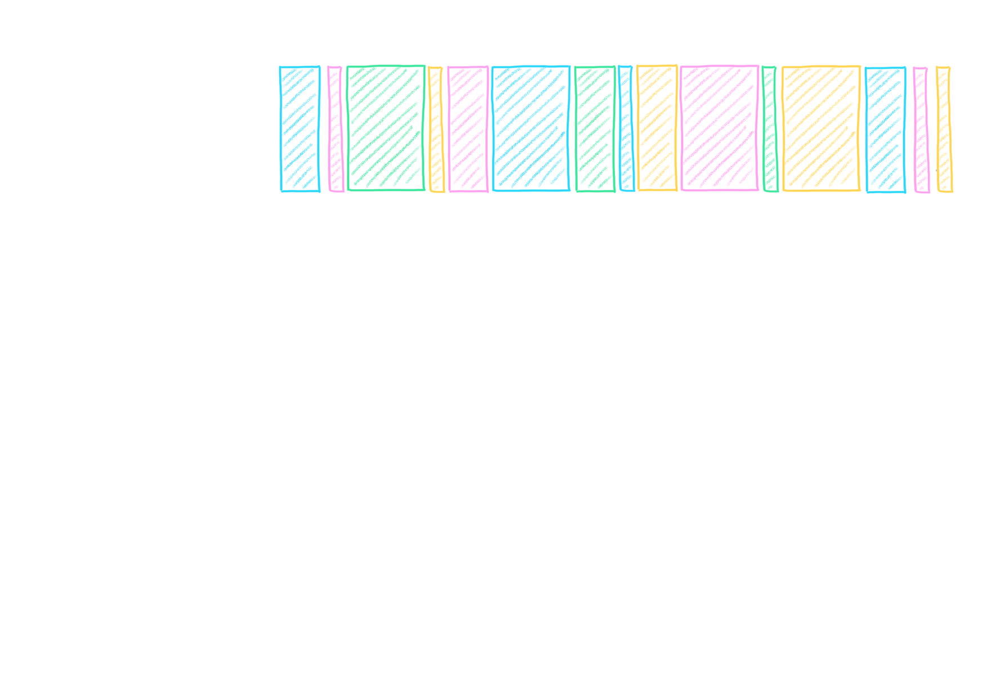
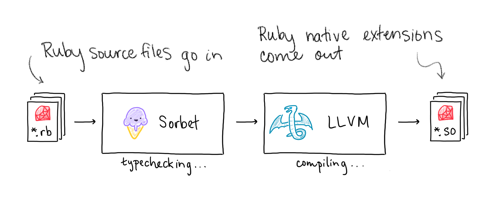
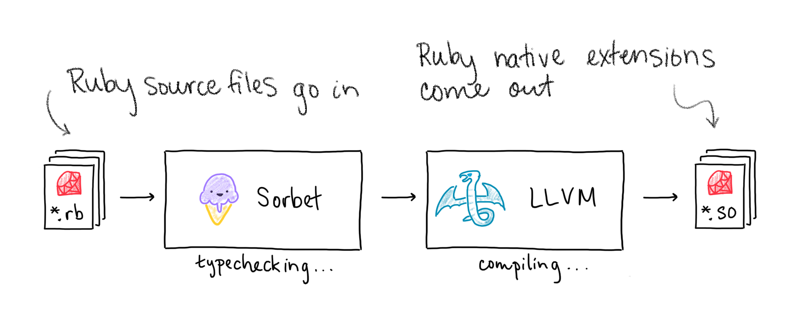
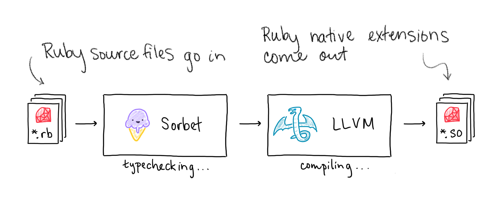

Compiling Ruby to Native Code with Sorbet and LLVM
Jake Zimmerman (@jez) Trevor Elliott (@elliottt)
November 10, 2021
Sorbet
+
LLVM
=
the Sorbet Compiler
Agenda
Why does Stripe care about performance?
Why build a compiler for Ruby?
How does it work?
How are we adopting it?
Agenda
Why does Stripe care about performance?
Why build a compiler for Ruby?
How does it work?
How are we adopting it?
üìà Stripe is an API for building a business
Accept payments
Coordinate payouts
Manage taxes
…
API speed is a feature ✨
Stripe users want lower latency
Stripe API runs on every checkout
Agenda
Why does Stripe care about performance?
Why build a compiler for Ruby?
How does it work?
How are we adopting it?
üíé Stripe uses Ruby extensively
Powers our most important services (Stripe API)
Hundreds of engineers use Ruby daily
Millions of lines of code (monorepo)
Massive type coverage with Sorbet
Visualizing API Latency
Visualizing API Latency

Why AoT, not JIT?
AoT: ahead-of-time JIT: just-in-time
Sorbet types speed up generated code
AoT are simpler (implement, debug)
Can still do both!
Why not TruffleRuby or JRuby?
No incremental migration
Compiler works with existing Ruby VM
Agenda
Why does Stripe care about performance?
Why build a compiler for Ruby?
How does it work?
How are we adopting it?

Sorbet Example
sig do params(x: T::Array[Integer]).returns(T::Array[Integer])enddef f(x) x.map{|v| v +1}end
Catching a type error
sig do params(x: T::Array[Integer]).returns(T::Array[Integer])enddef f(x) x.map{|v| v +1}.to_s# static error!end
LLVM
Compiler backend toolkit
Used by many compilers: clang, ghc, swift, …
The Ruby C API
def foo(val)puts valend
VALUE my_foo(VALUE self, VALUE val){return rb_funcall(self, rb_intern("puts"),1, val)}void Init_my_lib(){ rb_define_method(rb_cObject,"foo", my_foo,1);}
Compiling the example
sig do params(x: T::Array[Integer]).returns(T::Array[Integer])enddef f(x) x.map{|v| v +1}end
Compiling the example
# compiled: truesig do params(x: T::Array[Integer]).returns(T::Array[Integer])enddef f(x) x.map{|v| v +1}end
The Compiler’s View
# compiled: true# sig do# params(x: T::Array[Integer])# .returns(T::Array[Integer])# enddef f(x)raiseunless x.is_a?(Array) t = x.map{|v| v +1}raiseunless t.is_a?(Array) tend
Avoiding VM Dispatch
# compiled: truedef f(x)raiseunless x.is_a?(Array) t = rb_ary_collect(x) do|v| v +1endraiseunless t.is_a?(Array) tend
Inlining rb_ary_collect
# compiled: truedef f(x)raiseunless x.is_a?(Array) t =[]; i =0; len = x.lengthwhile i < len t <<<callblock>(x[i]) {|v| v +1} i +=1endraiseunless t.is_a?(Array) tend
Inlining the block
# compiled: truedef f(x)raiseunless x.is_a?(Array) t =[]; i =0; len = x.lengthwhile i < len t << x[i]+1 i +=1endraiseunless t.is_a?(Array) tend
Avoiding VM Dispatch
# compiled: truedef f(x)raiseunless x.is_a?(Array) t =[]; i =0; len = x.lengthwhile i < len t << x[i]+1 i +=1endraiseunless t.is_a?(Array) tend
Removing redundant type tests
# compiled: truedef f(x)raiseunless x.is_a?(Array) t =[]; i =0; len = x.lengthwhile i < len t << x[i]+1 i +=1endraiseunless t.is_a?(Array) tend
Final version
# compiled: truedef f(x)raiseunless x.is_a?(Array) t =[]; i =0; len = x.lengthwhile i < len t << x[i]+1 i +=1end tend


 
